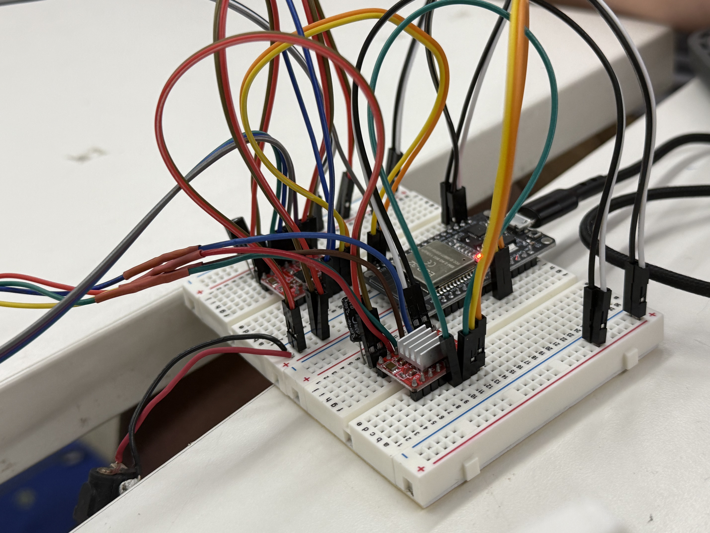
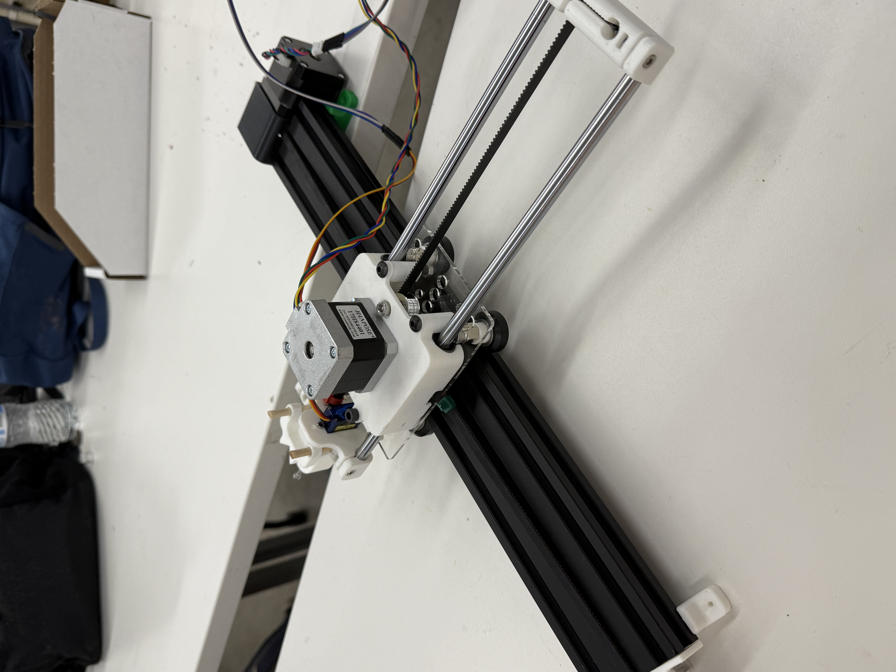

<div class="textcontainer">
<p class="margin"> </p>
<h3>Weeks 10-12: Machine Building</h3>
<h3>Assignment: Build a Drawing Robot</h3>
<h4>Our group's drawing machine followed the default tutorial. It had two separate tracks and stepper motors and one sirvo. The motors were used to move the pen holder on both the Y and X axes respectively, the Sirvo was used to move the end effector, which in our case was a marker.</h4>
<p></p>
<p></p>
<iframe width="560" height="315" src="https://www.youtube.com/embed/2EwfYGW_OB0?si=cCh6EuAVOYcE9Aji" title="YouTube video player" frameborder="0" allow="accelerometer; autoplay; clipboard-write; encrypted-media; gyroscope; picture-in-picture; web-share" referrerpolicy="strict-origin-when-cross-origin" allowfullscreen></iframe>
</div>